5.5. Week 5: Supervised Learning — Linear Regression, Logistic Regression, and Decision Trees#
Welcome! In the ML Foundations chapter we learned what it means for a model to learn: choose a model, measure how wrong it is with a loss function, and adjust its parameters until the loss is small. In this chapter we put those ideas to work on the three supervised learning models you will reach for most often. How does each one turn features into a prediction? What does it learn from the data? How do we read what it learned? And when should we pick one over another?
5.5.1. What We Will Cover#
Supervised Learning Recap — the two task types and the recipe every model shares
Linear Regression — predicting a number with a straight line (or a flat plane)
Logistic Regression — predicting a probability, then turning it into a category
Decision Trees — predicting by asking a sequence of yes/no questions
Putting It Together — comparing the three models head-to-head on the same problems
By the end of this notebook, you will be able to:
Fit a linear regression, interpret its coefficients, and evaluate it with MAE, RMSE, and \(R^2\).
Explain why linear regression is a poor fit for classification, and how the sigmoid function fixes it.
Interpret logistic regression coefficients as changes in odds, and choose a classification threshold.
Explain how a decision tree chooses its splits using Gini impurity, and control overfitting with
max_depth.Compare linear models and trees and choose the right one for a given problem.
[Date] · [Presenters]
This notebook follows the lecture. It introduces the ideas; you do not need to master every derivation or code example in one sitting.
Note: All the code cells in this notebook have already been run, so every plot is visible without running anything. Re-run them yourself and try changing the numbers — that’s the best way to learn!
5.5.2. Setup#
Run this cell once to load all the tools we need.
# Run me first!
import numpy as np
import pandas as pd
import matplotlib.pyplot as plt
from sklearn.datasets import load_breast_cancer
from sklearn.model_selection import train_test_split
from sklearn.linear_model import LinearRegression, LogisticRegression
from sklearn.tree import DecisionTreeClassifier, DecisionTreeRegressor, plot_tree, export_text
from sklearn.pipeline import make_pipeline
from sklearn.preprocessing import PolynomialFeatures, StandardScaler
from sklearn.metrics import (mean_absolute_error, mean_squared_error, r2_score,
accuracy_score, precision_score, recall_score,
confusion_matrix, ConfusionMatrixDisplay, log_loss)
import warnings; warnings.filterwarnings('ignore')
plt.rcParams.update({'figure.dpi': 100, 'axes.grid': True, 'grid.alpha': 0.25,
'axes.spines.top': False, 'axes.spines.right': False})
print("Ready! You can now run other cells without issues!")
Ready! You can now run other cells without issues!
5.5.3. Part 1: Supervised Learning Recap#
5.5.3.1. 1.1 Two Kinds of Questions#
In supervised learning every training example comes with the correct answer (the label, y). The model studies those
examples and learns to predict the answer for new examples it has never seen. What kind of answer we want decides the task type:
Regression |
Classification |
|
|---|---|---|
The target is… |
A number |
A category |
Example question |
“What score will this student get on the exam?” |
“Will this student pass or fail?” |
Example output |
|
|
Model in this chapter |
Linear Regression, Decision Tree |
Logistic Regression, Decision Tree |
⚠️ Watch the name! Despite its name, logistic regression is a classification model. The name is historical: under the hood it fits a regression-style equation, then converts the result into a probability.
5.5.4. Part 2: Linear Regression 📈#
5.5.4.1. 2.1 The Main Idea#
Linear regression predicts a number by drawing the best straight line through the data. With one feature \(x\), the model is the equation of a line:
\(w\) is the slope (also called the weight or coefficient): how much \(\hat{y}\) changes when \(x\) goes up by 1.
\(b\) is the intercept: the prediction when \(x = 0\).
Everyday analogy: A taxi fare is a flat fee plus a charge per mile:
fare = $2.50 per mile × miles + $3 base. Linear regression looks at a pile of past rides and figures out the per-mile rate and the base fee for you.
5.5.4.1.1. Key Vocabulary#
Word |
Plain-English Meaning |
Example (predicting exam scores) |
|---|---|---|
Coefficient / weight (\(w\)) |
How much the prediction changes per unit of a feature |
+4.5 points per hour studied |
Intercept (\(b\)) |
The prediction when every feature is 0 |
The score of a student who studies 0 hours |
Fitted line |
The line the model learned |
|
Residual (\(y - \hat{y}\)) |
How far one prediction is from the true value |
Predicted 80, actual 86 → residual = +6 |
Let’s fit one.
# ── Helper: create exam score data for this section ─────────────────────────
def making_data_for_linear_regression():
"""
Returns data for 100 students:
- X: hours studied for the exam (0 to 10), as a 2-D table
- y: exam score out of 100
The true relationship is roughly: score = 45 + 4.5 * hours, plus random noise.
"""
rng = np.random.RandomState(42)
hours = rng.uniform(0, 10, 100)
score = 45 + 4.5 * hours + rng.normal(0, 6, 100)
score = np.clip(score, 0, 100) # scores can't go above 100
return hours.reshape(-1, 1), score # sklearn wants X as a 2-D table
X_hours, y_score = making_data_for_linear_regression()
lin = LinearRegression()
lin.fit(X_hours, y_score) # "fit" = find the best w and b
w, b = lin.coef_[0], lin.intercept_
print(f"Learned slope (w): {w:.2f} -> each extra hour of studying adds about {w:.1f} points")
print(f"Learned intercept (b): {b:.2f} -> predicted score for a student who studies 0 hours")
print(f"\nPredicted score for a student who studies 6 hours: {lin.predict([[6]])[0]:.1f}")
# ── Plot the data, the fitted line, and a few residuals ─────────────────────
pred = lin.predict(X_hours)
show = np.arange(0, 100, 7) # draw residuals for a handful of students
plt.figure(figsize=(7.5, 4.4))
plt.scatter(X_hours, y_score, alpha=0.6, label='Students')
xs = np.linspace(0, 10, 100).reshape(-1, 1)
plt.plot(xs, lin.predict(xs), color='crimson', lw=2.5, label=f'Fitted line: ŷ = {w:.1f}x + {b:.1f}')
plt.vlines(X_hours[show].ravel(), pred[show], y_score[show], color='gray', ls='--', lw=1.2, label='Residuals (y − ŷ)')
plt.xlabel('Hours studied'); plt.ylabel('Exam score')
plt.title('Linear regression: the best straight line through the data'); plt.legend()
plt.show()
Learned slope (w): 4.22 -> each extra hour of studying adds about 4.2 points
Learned intercept (b): 46.29 -> predicted score for a student who studies 0 hours
Predicted score for a student who studies 6 hours: 71.6
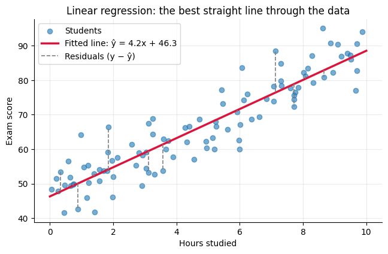
The true pattern we used to generate the data was score = 45 + 4.5 × hours. The model never saw that formula, only the
100 noisy examples, and it recovered values close to it. (They aren’t exact because of the random noise; more data would get closer.) That is what “learning the parameters” means.
5.5.4.2. 2.2 How Is the “Best” Line Chosen? Least Squares#
Each dashed gray line in the plot above is a residual: the gap between a student’s real score and the line’s prediction. A good line keeps those gaps small. Linear regression picks the \(w\) and \(b\) that minimize the mean squared error (MSE) of the residuals:
This is called ordinary least squares (OLS). Squaring makes every residual positive (so over- and under-predictions don’t cancel) and makes big misses count much more than small ones, as we saw with loss functions.
Let’s compare the least-squares line against two worse guesses.
# ── Compare three candidate lines by their MSE ──────────────────────────────
candidates = [(0.0, y_score.mean(), 'A flat line (ignores hours)'),
(8.0, 25.0, 'A line that is too steep'),
(w, b, 'The least-squares line')]
fig, axes = plt.subplots(1, 3, figsize=(15, 4.2), sharey=True)
for ax, (cw, cb, name) in zip(axes, candidates):
line_pred = cw * X_hours.ravel() + cb
mse = np.mean((y_score - line_pred) ** 2)
ax.scatter(X_hours, y_score, alpha=0.5)
ax.vlines(X_hours.ravel(), line_pred, y_score, color='gray', alpha=0.35)
ax.plot(xs, cw * xs + cb, color='crimson', lw=2.5)
ax.set_title(f'{name}\nMSE = {mse:.1f}'); ax.set_xlabel('Hours studied')
axes[0].set_ylabel('Exam score')
plt.tight_layout(); plt.show()
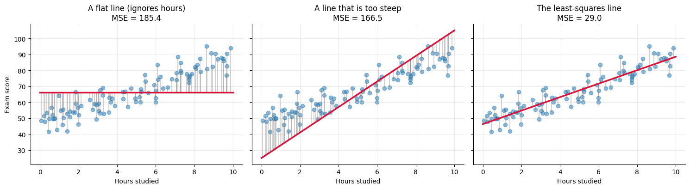
The least-squares line has the smallest MSE of any possible line. No other choice of \(w\) and \(b\) can beat it on this training data.
5.5.4.2.1. Finding the minimum: two routes to the same answer#
Gradient descent. Start with a guess and repeatedly step downhill on the loss landscape. This is exactly what we built from scratch in ML Foundations.
An exact formula. For linear regression with MSE, calculus gives a closed-form answer called the normal equation:
Here \(X\) is the feature table with an extra column of 1s (for the intercept), and \(\boldsymbol{\theta}\) holds \(b\) and all the weights.
scikit-learn’s LinearRegression solves this directly, which is why it doesn’t need a learning rate. Let’s check that the formula gives the same answer.
# ── Solve the normal equation by hand with numpy ────────────────────────────
X_design = np.column_stack([np.ones(len(X_hours)), X_hours]) # add a column of 1s for the intercept
theta = np.linalg.solve(X_design.T @ X_design, X_design.T @ y_score)
print(f"Normal equation: b = {theta[0]:.4f}, w = {theta[1]:.4f}")
print(f"scikit-learn: b = {lin.intercept_:.4f}, w = {lin.coef_[0]:.4f}")
print("Identical! sklearn solves the same equation (using a more numerically careful method).")
Normal equation: b = 46.2906, w = 4.2241
scikit-learn: b = 46.2906, w = 4.2241
Identical! sklearn solves the same equation (using a more numerically careful method).
Why ever use gradient descent then? The normal equation needs to work with an \((p+1)\times(p+1)\) matrix built from all \(p\) features at once. With millions of rows or hundreds of thousands of features that gets slow or runs out of memory, and gradient descent scales better. Many other models (including logistic regression, next) have no exact formula at all, so an iterative optimizer is the only option.
5.5.4.3. 2.3 Multiple Linear Regression: More Than One Feature#
Exam scores depend on more than study time. With \(p\) features, the model becomes a weighted sum:
With two features this is a flat plane instead of a line; with more it’s a “hyperplane” we can’t draw, but the math is identical.
Interpreting a coefficient: \(w_j\) is the change in the prediction when \(x_j\) goes up by 1 while all the other features stay the same. That “holding everything else fixed” part matters, as we’ll see.
Our new dataset has four features. We secretly built the scores so that coffee has no real effect. Let’s see whether the model figures that out.
# ── Helper: create a student dataset with several features ──────────────────
def making_data_for_multiple_regression():
"""
Returns a DataFrame of 300 students with four features and an exam score.
True relationship (the model doesn't get to see this):
score = 30 + 4.0*hours_studied + 2.5*hours_slept - 3.0*classes_missed + 0*coffee_cups + noise
"""
rng = np.random.RandomState(0)
n = 300
df = pd.DataFrame({
'hours_studied': rng.uniform(0, 10, n),
'hours_slept': rng.uniform(4, 9, n),
'classes_missed': rng.poisson(2, n),
'coffee_cups': rng.poisson(2, n),
})
df['exam_score'] = (30 + 4.0 * df.hours_studied + 2.5 * df.hours_slept
- 3.0 * df.classes_missed + 0.0 * df.coffee_cups + rng.normal(0, 5, n))
return df
students = making_data_for_multiple_regression()
features = ['hours_studied', 'hours_slept', 'classes_missed', 'coffee_cups']
print(students.head().round(2).to_string(), "\n")
X_multi, y_multi = students[features], students['exam_score']
Xm_train, Xm_test, ym_train, ym_test = train_test_split(X_multi, y_multi, test_size=0.25, random_state=42)
multi = LinearRegression().fit(Xm_train, ym_train)
coef_table = pd.DataFrame({'learned coefficient': multi.coef_.round(2),
'true value (hidden)': [4.0, 2.5, -3.0, 0.0]}, index=features)
print(coef_table.to_string())
print(f"\nIntercept: {multi.intercept_:.2f} (true value: 30)")
hours_studied hours_slept classes_missed coffee_cups exam_score
0 5.49 8.53 1 1 70.88
1 7.15 7.87 1 2 72.26
2 6.03 5.67 2 6 65.87
3 5.45 4.41 1 1 63.37
4 4.24 6.04 2 4 55.63
learned coefficient true value (hidden)
hours_studied 4.13 4.0
hours_slept 2.35 2.5
classes_missed -3.46 -3.0
coffee_cups 0.08 0.0
Intercept: 31.11 (true value: 30)
Reading the table:
hours_studied ≈ +4: holding sleep, absences, and coffee fixed, each extra hour of studying adds about 4 points.classes_missed ≈ −3: each missed class costs about 3 points.coffee_cups ≈ 0: the model correctly found that coffee doesn’t matter (the small leftover value is just noise).
5.5.4.3.1. ⚠️ Raw coefficients are not importance scores#
It’s tempting to say “the biggest coefficient is the most important feature,” but each coefficient is measured in its own feature’s units. “Points per hour of studying” and “points per missed class” aren’t comparable. Measure sleep in minutes instead of hours and its coefficient would shrink 60×, even though sleep matters exactly as much as before.
The fix is to standardize the features first (mean 0, standard deviation 1). Then every coefficient means “points per one standard deviation of this feature,” which is a fair comparison.
# ── Standardize, then compare coefficients fairly ───────────────────────────
scaled_lin = make_pipeline(StandardScaler(), LinearRegression()).fit(Xm_train, ym_train)
std_coefs = pd.Series(scaled_lin[-1].coef_, index=features)
fig, axes = plt.subplots(1, 2, figsize=(13, 3.8))
pd.Series(multi.coef_, index=features).plot.barh(ax=axes[0], color='gray')
axes[0].set_title('Raw coefficients\n(points per 1 unit, units differ)'); axes[0].axvline(0, color='black', lw=0.8)
std_coefs.plot.barh(ax=axes[1], color=['tab:green' if c > 0 else 'crimson' for c in std_coefs])
axes[1].set_title('Standardized coefficients\n(points per 1 standard deviation, comparable)'); axes[1].axvline(0, color='black', lw=0.8)
plt.tight_layout(); plt.show()
print("Effect of a one-standard-deviation increase in each feature:")
for name, c in std_coefs.sort_values(key=abs, ascending=False).items():
print(f" {name:<15} {c:+6.2f} points")
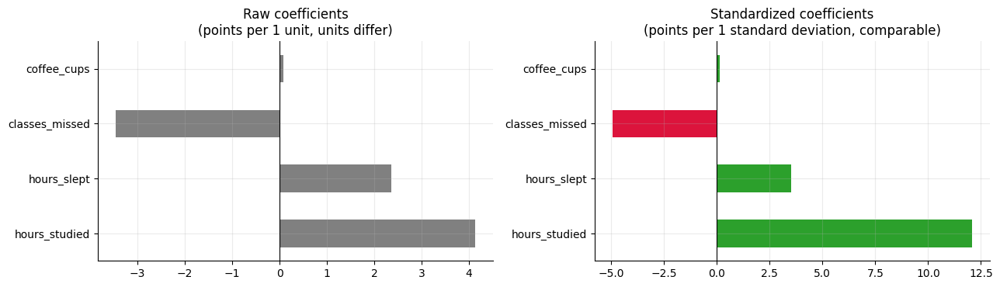
Effect of a one-standard-deviation increase in each feature:
hours_studied +12.09 points
classes_missed -4.93 points
hours_slept +3.50 points
coffee_cups +0.12 points
After standardizing, hours_studied clearly has the largest effect: students’ study time varies over a wide range (0 to 10 hours), so it explains the most variation in scores.
A warning about cause and effect: These coefficients describe associations in the data, not proof of causation. In our fake data we controlled the cause, so we know studying raises scores. In real data, a coefficient can be big because of a hidden factor the model never saw.
5.5.4.4. 2.4 Evaluating a Regression Model#
We always judge a model on test data it didn’t train on. Three numbers come up constantly:
Metric |
Formula |
Plain-English meaning |
|---|---|---|
MAE |
\(\frac{1}{n}\sum \lvert y_i-\hat{y}_i\rvert\) |
The typical size of a miss, in the target’s units |
RMSE |
\(\sqrt{\frac{1}{n}\sum (y_i-\hat{y}_i)^2}\) |
Like MAE, but big misses count extra |
\(R^2\) |
\(1 - \dfrac{\sum (y_i-\hat{y}_i)^2}{\sum (y_i-\bar{y})^2}\) |
The fraction of the target’s variation the model explains |
5.5.4.4.1. Understanding \(R^2\)#
\(R^2\) compares your model to the laziest possible model: always predict the average \(\bar{y}\).
\(R^2 = 1\): perfect predictions.
\(R^2 = 0\): no better than always guessing the average.
\(R^2 < 0\): worse than guessing the average (possible on test data!).
Everyday analogy: If the class average on an exam is 70, a “model” that guesses 70 for everyone has \(R^2 = 0\). An \(R^2\) of 0.8 means your model removed 80% of the squared error that guessing-the-average would make.
Next to the numbers, it’s also worth plotting the residuals. If the model is a good fit, they should look like random noise centered on zero, with no pattern.
# ── Evaluate on training and test data ─────────────────────────────────────
def regression_report(model, X, y, label):
p = model.predict(X)
print(f"{label:<6} MAE = {mean_absolute_error(y, p):5.2f} "
f"RMSE = {np.sqrt(mean_squared_error(y, p)):5.2f} R² = {r2_score(y, p):.3f}")
return p
_ = regression_report(multi, Xm_train, ym_train, 'Train')
test_pred = regression_report(multi, Xm_test, ym_test, 'Test')
print("\nTrain and test errors are close: no sign of overfitting.")
print("The test RMSE is close to the noise level (5 points) we built into the data, so there's little left to learn.")
# ── Plots: predicted vs. actual, and residuals ──────────────────────────────
fig, axes = plt.subplots(1, 2, figsize=(13, 4.4))
axes[0].scatter(ym_test, test_pred, alpha=0.7)
lims = [ym_test.min() - 3, ym_test.max() + 3]
axes[0].plot(lims, lims, 'k--', lw=1.5, label='Perfect prediction')
axes[0].set_xlabel('Actual score'); axes[0].set_ylabel('Predicted score')
axes[0].set_title('Predicted vs. actual (test set)'); axes[0].legend()
axes[1].scatter(test_pred, ym_test - test_pred, alpha=0.7)
axes[1].axhline(0, color='crimson', lw=2)
axes[1].set_xlabel('Predicted score'); axes[1].set_ylabel('Residual (actual − predicted)')
axes[1].set_title('Residuals look like random noise: good!')
plt.tight_layout(); plt.show()
Train MAE = 4.00 RMSE = 4.99 R² = 0.887
Test MAE = 4.11 RMSE = 5.26 R² = 0.825
Train and test errors are close: no sign of overfitting.
The test RMSE is close to the noise level (5 points) we built into the data, so there's little left to learn.
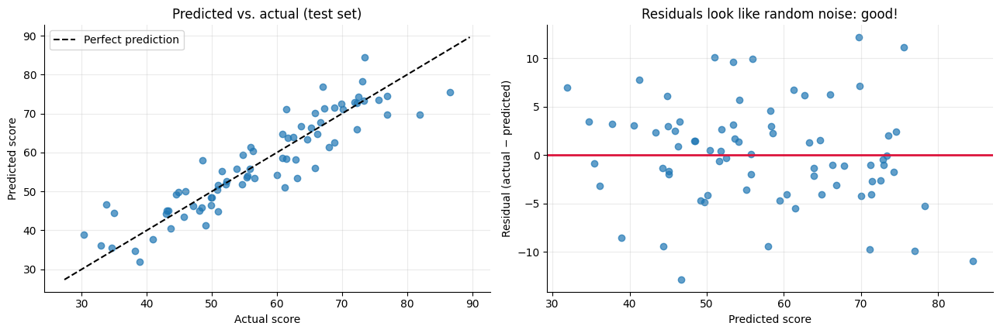
5.5.4.5. 2.5 When a Straight Line Isn’t Enough#
Linear regression assumes the relationship really is (roughly) a straight line. What if it isn’t? Suppose scores depend on sleep in a curved way: too little sleep hurts, and so does oversleeping, with the best results around 8 hours.
# ── Helper: create curved data ──────────────────────────────────────────────
def making_data_for_curved_relationship():
"""
Returns 150 students: hours slept the night before (3 to 11) and exam score.
True relationship: an upside-down U that peaks at 8 hours of sleep.
score = 85 - 2.5 * (sleep - 8)^2 + noise
"""
rng = np.random.RandomState(7)
sleep = rng.uniform(3, 11, 150)
score = 85 - 2.5 * (sleep - 8) ** 2 + rng.normal(0, 5, 150)
return sleep.reshape(-1, 1), score
X_sleep, y_sleep = making_data_for_curved_relationship()
straight = LinearRegression().fit(X_sleep, y_sleep)
curved = make_pipeline(PolynomialFeatures(degree=2), LinearRegression()).fit(X_sleep, y_sleep)
grid = np.linspace(3, 11, 200).reshape(-1, 1)
fig, axes = plt.subplots(1, 2, figsize=(13, 4.4))
axes[0].scatter(X_sleep, y_sleep, alpha=0.5)
axes[0].plot(grid, straight.predict(grid), color='crimson', lw=2.5, label=f'Straight line (R² = {r2_score(y_sleep, straight.predict(X_sleep)):.2f})')
axes[0].plot(grid, curved.predict(grid), color='tab:green', lw=2.5, label=f'Degree-2 polynomial (R² = {r2_score(y_sleep, curved.predict(X_sleep)):.2f})')
axes[0].set_xlabel('Hours slept'); axes[0].set_ylabel('Exam score'); axes[0].set_title('A straight line misses the curve'); axes[0].legend()
resid = y_sleep - straight.predict(X_sleep)
axes[1].scatter(X_sleep, resid, alpha=0.5, color='crimson')
axes[1].axhline(0, color='black', lw=1.5)
axes[1].set_xlabel('Hours slept'); axes[1].set_ylabel('Residual')
axes[1].set_title('Straight-line residuals form a clear U pattern: a warning sign')
plt.tight_layout(); plt.show()
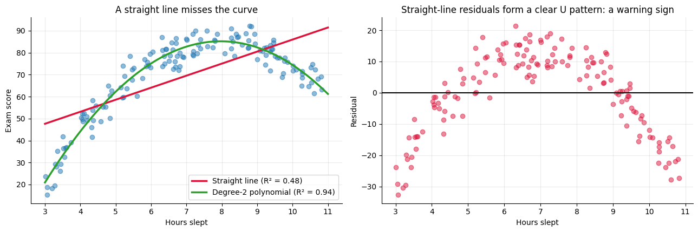
The residual plot on the right is the giveaway: the errors aren’t random, they form a pattern. A pattern in the residuals means there is structure the model failed to capture.
The fix was to add a squared feature, \(x^2\), using PolynomialFeatures(degree=2). The model becomes \(\hat{y} = w_1 x + w_2 x^2 + b\).
Wait, is that still “linear” regression? Yes! “Linear” means the prediction is a weighted sum of the features, i.e. linear in the parameters \(w\). The features themselves can be anything we compute, including \(x^2\). Just remember the bias–variance lesson: a high polynomial degree can overfit.
5.5.4.5.1. Pros & Cons — Linear Regression#
Strengths |
Weaknesses |
|---|---|
Very fast to train, even on large data |
Assumes a straight-line relationship unless you engineer features |
Coefficients are easy to explain (“+4 points per hour”) |
Sensitive to outliers, because squared errors amplify big misses |
Works well with limited data |
Coefficients become unstable when features are strongly correlated with each other |
A great baseline to beat |
Can’t capture interactions (e.g. “studying helps more if you also slept”) unless you add them as features |
Best used when: the target is a number, the relationship is roughly linear, and you want a model you can explain.
5.5.4.5.2. Key Parameters — Linear Regression#
LinearRegression itself has almost nothing to tune. Most of the decisions are about what features you give it.
Parameter / choice |
What it does |
Effect of changing it |
|---|---|---|
|
Whether to learn the intercept \(b\) (default |
Leave it on unless you have a strong reason to force the line through 0 |
|
Adds \(x^2, x^3, \dots\) (and products of features) |
Higher degree = more flexible curve, more risk of overfitting |
|
Puts features on the same scale |
Doesn’t change predictions for plain |
|
Regularized versions that penalize large coefficients |
Larger |
5.5.4.5.3. ✏️ Quick Check#
A model predicting apartment rent has coefficient
+1.8onsquare_feet. What does that mean in plain English?Model A has test \(R^2 = 0.85\); Model B has test \(R^2 = -0.10\). What does B’s negative value tell you?
You plot residuals vs. predictions and see a clear curve. What should you try?
Click for answers
Holding every other feature fixed, each extra square foot is associated with about $1.80 more rent per month.
Model B is worse than just predicting the average rent for every apartment. Something is badly wrong (overfitting, a bug, or the wrong features).
The relationship isn’t linear. Try adding features like polynomial terms or transformations (e.g.
log), or use a more flexible model like a decision tree.
5.5.5. Part 3: Logistic Regression 🔀#
5.5.5.1. 3.1 The Problem: Predicting a Category#
Now the question changes from “what score will this student get?” to “will this student pass (1) or fail (0)?” The target has only two possible values. Why not just run linear regression on the 0s and 1s and call anything above 0.5 a “pass”? Let’s try it.
# ── Helper: create pass/fail data ───────────────────────────────────────────
def making_data_for_logistic_regression():
"""
Returns 120 students:
- X: hours studied (0 to 10), as a 2-D table
- y: 1 if the student passed, 0 if they failed
The chance of passing rises smoothly with study time, crossing 50% at about 5 hours.
"""
rng = np.random.RandomState(1)
hours = rng.uniform(0, 10, 120)
p_pass = 1 / (1 + np.exp(-1.3 * (hours - 5)))
passed = (rng.rand(120) < p_pass).astype(int)
return hours.reshape(-1, 1), passed
X_pass, y_pass = making_data_for_logistic_regression()
line_model = LinearRegression().fit(X_pass, y_pass) # the WRONG tool, for comparison
logit = LogisticRegression().fit(X_pass, y_pass) # the right tool
grid = np.linspace(-2, 12, 300).reshape(-1, 1)
plt.figure(figsize=(8, 4.6))
plt.scatter(X_pass, y_pass, alpha=0.5, label='Students (1 = pass, 0 = fail)')
plt.plot(grid, line_model.predict(grid), color='crimson', lw=2.5, label='Linear regression')
plt.plot(grid, logit.predict_proba(grid)[:, 1], color='tab:green', lw=2.5, label='Logistic regression: P(pass)')
plt.axhspan(1, 1.6, color='crimson', alpha=0.07); plt.axhspan(-0.6, 0, color='crimson', alpha=0.07)
plt.ylim(-0.6, 1.6); plt.xlabel('Hours studied'); plt.ylabel('Prediction')
plt.title('Linear regression escapes the 0–1 range; logistic regression never does'); plt.legend(loc='upper left')
plt.show()
for h in [0, 12]:
print(f"{h:>2} hours studied -> linear regression says {line_model.predict([[h]])[0]:+.2f}, "
f"logistic regression says P(pass) = {logit.predict_proba([[h]])[0, 1]:.3f}")
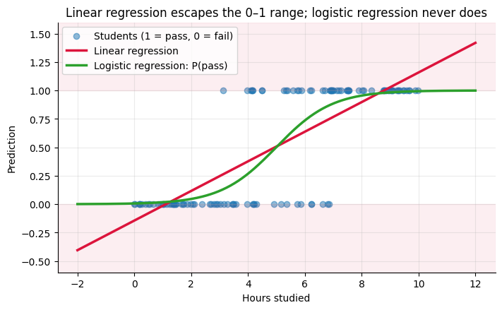
0 hours studied -> linear regression says -0.14, logistic regression says P(pass) = 0.006
12 hours studied -> linear regression says +1.42, logistic regression says P(pass) = 0.999
Linear regression’s predictions go below 0 and above 1 (the shaded regions). Those can’t be probabilities: what would a “−18% chance of passing” mean? A straight line is also easily dragged around by points far from the boundary.
What we want is an S-shaped curve that stays between 0 and 1. That’s exactly what logistic regression draws.
5.5.5.2. 3.2 The Sigmoid Function#
Logistic regression starts with the same weighted sum as linear regression, then passes it through the sigmoid (or logistic) function:
The sigmoid takes any number and squashes it into the range 0 to 1:
\(z\) (the weighted sum) |
\(\sigma(z)\) (the probability) |
Meaning |
|---|---|---|
−5 |
0.007 |
Almost certainly class 0 |
−1 |
0.27 |
Leaning class 0 |
0 |
0.50 |
A coin flip: this is the decision boundary |
+1 |
0.73 |
Leaning class 1 |
+5 |
0.993 |
Almost certainly class 1 |
To turn the probability into a category, apply a threshold (0.5 by default): predict 1 if \(\hat{p} \ge 0.5\), otherwise 0.
# ── Plot the sigmoid function ───────────────────────────────────────────────
def sigmoid(z):
return 1 / (1 + np.exp(-z))
z = np.linspace(-8, 8, 300)
plt.figure(figsize=(7.5, 4.2))
plt.plot(z, sigmoid(z), lw=3)
plt.axhline(0.5, color='gray', ls=':'); plt.axvline(0, color='gray', ls=':')
plt.fill_between(z, 0, 1, where=z >= 0, color='tab:green', alpha=0.08, label='Predict class 1 (p ≥ 0.5)')
plt.fill_between(z, 0, 1, where=z < 0, color='crimson', alpha=0.08, label='Predict class 0 (p < 0.5)')
plt.xlabel('z = w·x + b (any number)'); plt.ylabel('σ(z) (a probability)')
plt.title('The sigmoid squashes any number into the range 0 to 1'); plt.legend(loc='upper left')
plt.show()
for val in [-5, -1, 0, 1, 5]:
print(f"sigmoid({val:+d}) = {sigmoid(val):.3f}")
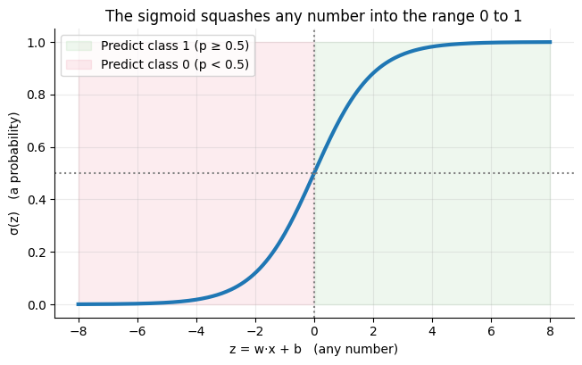
sigmoid(-5) = 0.007
sigmoid(-1) = 0.269
sigmoid(+0) = 0.500
sigmoid(+1) = 0.731
sigmoid(+5) = 0.993
5.5.5.3. 3.3 Reading the Coefficients: Odds#
Logistic regression’s coefficients are a little less direct than linear regression’s, because the sigmoid bends everything. The cleanest way to read them uses odds:
With a bit of algebra, the logistic model says the log of the odds is linear in the features:
So each extra unit of \(x\) adds \(w\) to the log-odds, which means it multiplies the odds by \(e^{w}\). That number \(e^{w}\) is called the odds ratio.
# ── Interpret the fitted pass/fail model ────────────────────────────────────
w_log, b_log = logit.coef_[0, 0], logit.intercept_[0]
print(f"Weight w: {w_log:.3f}")
print(f"Intercept b: {b_log:.3f}")
print(f"Odds ratio: e^w = {np.exp(w_log):.2f} -> each extra hour multiplies the odds of passing by {np.exp(w_log):.2f}")
print(f"50/50 point: z = 0 when hours = -b/w = {-b_log / w_log:.2f} (we built the data to cross 50% at 5 hours)\n")
hours_to_check = np.array([[2], [4], [5], [6], [8]])
probs = logit.predict_proba(hours_to_check)[:, 1]
table = pd.DataFrame({'hours studied': hours_to_check.ravel(),
'z = w·x + b': (w_log * hours_to_check.ravel() + b_log).round(2),
'P(pass)': probs.round(3),
'odds': (probs / (1 - probs)).round(2),
'prediction': np.where(probs >= 0.5, 'pass', 'fail')})
print(table.to_string(index=False))
Weight w: 1.016
Intercept b: -5.071
Odds ratio: e^w = 2.76 -> each extra hour multiplies the odds of passing by 2.76
50/50 point: z = 0 when hours = -b/w = 4.99 (we built the data to cross 50% at 5 hours)
hours studied z = w·x + b P(pass) odds prediction
2 -3.04 0.046 0.05 fail
4 -1.01 0.268 0.37 fail
5 0.01 0.502 1.01 pass
6 1.03 0.736 2.79 pass
8 3.06 0.955 21.30 pass
Look at the odds column for 2 → 4 → 6 → 8 hours: every two-hour step multiplies the odds by the same factor, \(e^{2w}\) (about 7.5 here).
That constant multiplication is what the odds ratio describes. Notice the probability does not rise by the same amount each hour:
it changes fastest near 50% and flattens out near 0% and 100%.
5.5.5.4. 3.4 How Logistic Regression Is Trained#
Logistic regression minimizes log loss (binary cross-entropy), which we met in ML Foundations:
It punishes confident wrong answers severely and rewards well-calibrated probabilities. Unlike linear regression there’s no exact formula for the best weights, so the model is trained iteratively. A remarkable fact makes this easy: the gradient of log loss has the same form as the linear regression gradient, just with probabilities in place of raw predictions:
Let’s train logistic regression with the same gradient-descent loop as before and compare it to scikit-learn.
# ── Logistic regression from scratch with gradient descent ──────────────────
x_std = (X_pass.ravel() - X_pass.mean()) / X_pass.std() # standardize, as before
w_gd, b_gd, lr = 0.0, 0.0, 0.5
loss_history = []
for step in range(500):
p_hat = sigmoid(w_gd * x_std + b_gd) # 1. predict probabilities
loss_history.append(log_loss(y_pass, p_hat)) # 2. measure the loss
w_gd -= lr * np.mean(x_std * (p_hat - y_pass)) # 3. step downhill
b_gd -= lr * np.mean(p_hat - y_pass)
# sklearn on the same standardized feature, with its default regularization turned off for a fair comparison
sk_logit = LogisticRegression(penalty=None).fit(x_std.reshape(-1, 1), y_pass)
print(f"Gradient descent: w = {w_gd:.4f}, b = {b_gd:.4f}, log loss = {loss_history[-1]:.4f}")
print(f"scikit-learn: w = {sk_logit.coef_[0, 0]:.4f}, b = {sk_logit.intercept_[0]:.4f}")
plt.figure(figsize=(7, 3.8))
plt.plot(loss_history, lw=2.5, color='crimson')
plt.xlabel('Step'); plt.ylabel('Log loss'); plt.title('Log loss falls as gradient descent learns w and b')
plt.show()
Gradient descent: w = 3.1614, b = 0.0185, log loss = 0.2848
scikit-learn: w = 3.1624, b = 0.0185
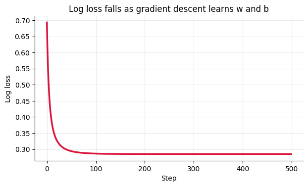
They match. scikit-learn uses a faster optimizer (called lbfgs) than our plain loop, but the idea is identical:
compute the gradient of the loss, step the opposite way, repeat.
⚠️ sklearn gotcha:
LogisticRegression()applies L2 regularization by default (C=1.0), which gently shrinks the weights toward 0. That’s usually helpful, but it means the default coefficients are a bit smaller than the unregularized ones. We passedpenalty=Noneabove to compare apples to apples. Because of the penalty, it’s good practice to standardize features before logistic regression.
5.5.5.5. 3.5 The Decision Boundary#
With two features, the model computes \(z = w_1x_1 + w_2x_2 + b\) and predicts class 1 wherever \(z \ge 0\). The set of points where \(z = 0\) exactly is a straight line, called the decision boundary. Everything on one side is predicted “pass,” everything on the other “fail.” Logistic regression is a linear classifier: its boundary is always a line (or a flat plane, with more features).
# ── Helper: create pass/fail data with two features ─────────────────────────
def making_data_for_2d_logistic():
"""
Returns 300 students with two features and a pass (1) / fail (0) label:
- hours studied (0 to 10)
- practice problems completed (0 to 30)
Both features raise the chance of passing.
"""
rng = np.random.RandomState(3)
n = 300
hours = rng.uniform(0, 10, n)
problems = rng.uniform(0, 30, n)
z = 0.9 * (hours - 5) + 0.3 * (problems - 15)
passed = (rng.rand(n) < sigmoid(z)).astype(int)
return np.column_stack([hours, problems]), passed
def plot_decision_boundary(ax, model, X, y, title, xlabel='Hours studied', ylabel='Practice problems', proba=False):
"""Color the background by the model's prediction, then draw the data on top."""
xx, yy = np.meshgrid(np.linspace(X[:, 0].min() - 0.5, X[:, 0].max() + 0.5, 300),
np.linspace(X[:, 1].min() - 0.5, X[:, 1].max() + 0.5, 300))
grid_pts = np.c_[xx.ravel(), yy.ravel()]
if proba:
Z = model.predict_proba(grid_pts)[:, 1].reshape(xx.shape)
cf = ax.contourf(xx, yy, Z, levels=20, cmap='RdYlGn', alpha=0.45)
ax.contour(xx, yy, Z, levels=[0.5], colors='black', linewidths=2.5)
plt.colorbar(cf, ax=ax, label='P(pass)')
else:
Z = model.predict(grid_pts).reshape(xx.shape)
ax.contourf(xx, yy, Z, levels=[-0.5, 0.5, 1.5], colors=['crimson', 'tab:green'], alpha=0.18)
ax.scatter(X[y == 0, 0], X[y == 0, 1], c='crimson', edgecolor='white', s=28, label='Fail (0)')
ax.scatter(X[y == 1, 0], X[y == 1, 1], c='tab:green', edgecolor='white', s=28, label='Pass (1)')
ax.set_xlabel(xlabel); ax.set_ylabel(ylabel); ax.set_title(title)
X2, y2 = making_data_for_2d_logistic()
X2_train, X2_test, y2_train, y2_test = train_test_split(X2, y2, test_size=0.3, random_state=42, stratify=y2)
logit2 = LogisticRegression().fit(X2_train, y2_train)
(w1, w2), b2 = logit2.coef_[0], logit2.intercept_[0]
print(f"Learned model: z = {w1:.2f}·hours + {w2:.2f}·problems + ({b2:.2f})")
print(f"Test accuracy: {logit2.score(X2_test, y2_test):.1%}")
fig, ax = plt.subplots(figsize=(8, 5))
plot_decision_boundary(ax, logit2, X2_train, y2_train, 'Logistic regression: a straight-line boundary (black) at P(pass) = 0.5', proba=True)
ax.legend(loc='upper right')
plt.show()
Learned model: z = 1.36·hours + 0.42·problems + (-13.35)
Test accuracy: 91.1%
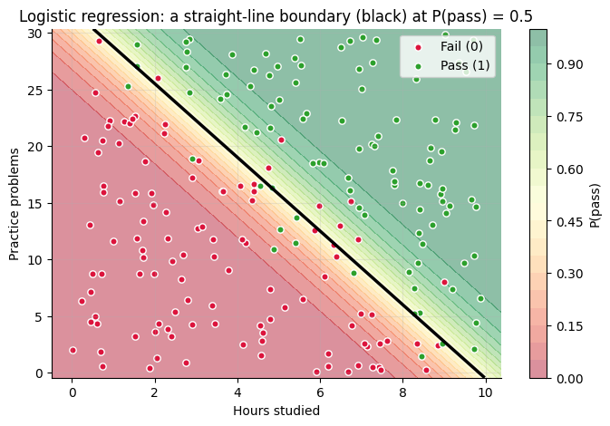
The background shading shows the predicted probability, and the black line is where it equals exactly 0.5. Students far from the line get confident predictions; students near the line are close to a coin flip, and that’s where the model’s mistakes happen.
5.5.5.6. 3.6 Choosing a Threshold, and Evaluating a Classifier#
A threshold of 0.5 is just a default. You can move it, and you should when the two kinds of mistakes have different costs. Recall the confusion matrix and the metrics built from it:
Metric |
Formula |
Question it answers |
|---|---|---|
Accuracy |
\(\frac{TP + TN}{\text{all}}\) |
What fraction of all predictions were right? |
Precision |
\(\frac{TP}{TP + FP}\) |
When the model says “1”, how often is it right? |
Recall |
\(\frac{TP}{TP + FN}\) |
Of all the real 1s, how many did the model catch? |
Lower the threshold → the model says “1” more easily → it catches more real 1s (recall ↑) but raises more false alarms (precision ↓).
Raise the threshold → the model says “1” only when very sure → precision ↑, recall ↓.
Everyday analogy: A smoke detector with a low threshold catches every fire but also goes off when you make toast. A high threshold rarely gives false alarms but might sleep through a small fire. For smoke detectors, we choose a low threshold on purpose.
# ── Confusion matrix at the default 0.5 threshold ───────────────────────────
p_test = logit2.predict_proba(X2_test)[:, 1] # probability of class 1 (pass)
fig, axes = plt.subplots(1, 2, figsize=(13, 4.4))
ConfusionMatrixDisplay(confusion_matrix(y2_test, (p_test >= 0.5).astype(int)),
display_labels=['Fail', 'Pass']).plot(ax=axes[0], cmap='Blues', colorbar=False)
axes[0].set_title('Confusion matrix (threshold = 0.5)'); axes[0].grid(False)
# ── Sweep the threshold and watch precision and recall trade off ────────────
thresholds = np.linspace(0.05, 0.95, 50)
prec = [precision_score(y2_test, (p_test >= t).astype(int), zero_division=1) for t in thresholds]
rec = [recall_score(y2_test, (p_test >= t).astype(int)) for t in thresholds]
acc = [accuracy_score(y2_test, (p_test >= t).astype(int)) for t in thresholds]
axes[1].plot(thresholds, prec, lw=2.5, label='Precision')
axes[1].plot(thresholds, rec, lw=2.5, label='Recall')
axes[1].plot(thresholds, acc, lw=2.5, ls='--', color='gray', label='Accuracy')
axes[1].axvline(0.5, color='black', ls=':', label='Default threshold')
axes[1].set_xlabel('Threshold'); axes[1].set_ylabel('Score'); axes[1].set_title('Moving the threshold trades precision for recall')
axes[1].legend()
plt.tight_layout(); plt.show()
print(f"{'Threshold':>9} {'Precision':>10} {'Recall':>8} {'Accuracy':>9}")
print("-" * 40)
for t in [0.2, 0.5, 0.8]:
pred_t = (p_test >= t).astype(int)
print(f"{t:>9} {precision_score(y2_test, pred_t):>10.1%} {recall_score(y2_test, pred_t):>8.1%} {accuracy_score(y2_test, pred_t):>9.1%}")
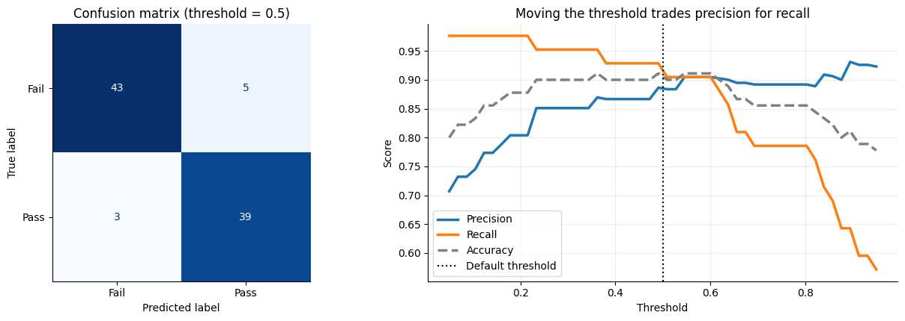
Threshold Precision Recall Accuracy
----------------------------------------
0.2 80.4% 97.6% 87.8%
0.5 88.6% 92.9% 91.1%
0.8 89.2% 78.6% 85.6%
5.5.5.6.1. More than two classes?#
Logistic regression extends naturally to 3+ classes (e.g. grade A / B / C). Instead of one sigmoid, it learns one weighted sum per class
and converts them into probabilities that add up to 1 using the softmax function. In scikit-learn you don’t have to change anything:
LogisticRegression().fit(X, y) detects multiple classes automatically.
5.5.5.6.2. Pros & Cons — Logistic Regression#
Strengths |
Weaknesses |
|---|---|
Outputs real probabilities, not just labels |
The decision boundary is a straight line unless you engineer features |
Fast to train and to predict |
Can’t capture interactions or curved boundaries on its own |
Coefficients are interpretable (odds ratios) |
Needs feature scaling to behave well with regularization |
A strong, standard baseline for classification |
Struggles when classes overlap in complicated ways |
Best used when: you need a classification model you can explain, or you need well-calibrated probabilities (risk scores, rankings).
5.5.5.6.3. Key Parameters — Logistic Regression#
Parameter |
What it does |
Default |
Effect of changing it |
|---|---|---|---|
|
Inverse of regularization strength |
|
Smaller |
|
Type of regularization: |
|
|
|
How much each class counts in the loss |
|
|
|
Maximum optimizer steps |
|
Increase it if you see a “failed to converge” warning |
threshold |
Not a parameter! You apply it yourself to |
0.5 (via |
Lower = higher recall; higher = higher precision |
Rule of thumb: Standardize your features, start with the defaults, then tune
Con validation data (try 0.01, 0.1, 1, 10, 100).
5.5.5.6.4. ✏️ Quick Check#
A model’s weighted sum for a student is \(z = 0\). What probability does it predict, and why?
A spam filter has a coefficient of \(w = 0.7\) on “number of exclamation marks.” Each extra exclamation mark multiplies the odds of spam by roughly how much?
A hospital uses logistic regression to flag patients for a follow-up test. Should it use a threshold above or below 0.5?
Click for answers
0.5, because \(\sigma(0) = 1/(1+e^0) = 1/2\). The student is exactly on the decision boundary.
\(e^{0.7} \approx\) 2.0, so the odds of spam roughly double with each exclamation mark (holding the other features fixed).
Below 0.5. Missing a sick patient (a false negative) is far more costly than an extra follow-up test, so we want high recall even if precision drops.
5.5.6. Part 4: Decision Trees 🌳#
5.5.6.1. 4.1 The Main Idea#
A decision tree makes a prediction by asking a series of yes/no questions about the features, like a flowchart. Each answer sends you down a branch until you reach a leaf, which holds the prediction.
Everyday analogy: The game 20 Questions. A good player doesn’t ask random questions; they ask the one that splits the remaining possibilities most cleanly (“Is it alive?”) before narrowing down. A decision tree learns which questions to ask, and in what order, from the data.
Studied more than 4 hours?
/ \
No Yes
/ \
Predict: FAIL Slept more than 6 hours?
/ \
No Yes
/ \
Predict: FAIL Predict: PASS
5.5.6.1.1. Key Vocabulary#
Word |
Plain-English Meaning |
|---|---|
Root node |
The very first question at the top |
Internal node / split |
A question: “is feature ≤ threshold?” |
Branch |
One path after answering a question |
Leaf node |
A final answer — no more questions |
Depth |
The number of questions asked on the longest path from root to leaf |
Two big differences from the linear models:
There are no weights. The model is the set of questions and leaf answers.
Trees can learn non-linear patterns and interactions (“studying helps only if you also slept”) without any feature engineering.
5.5.6.2. 4.2 How Does a Tree Choose Its Questions? Impurity#
At every node, the tree considers every feature and every possible threshold, and picks the question that makes the two resulting groups as pure as possible: ideally, one group all “pass” and the other all “fail.”
Purity is measured with Gini impurity. For a group where a fraction \(p_k\) of the examples belong to class \(k\):
Group contents |
Gini |
Meaning |
|---|---|---|
10 pass, 0 fail |
\(1 - (1^2 + 0^2) = 0\) |
Perfectly pure |
8 pass, 2 fail |
\(1 - (0.8^2 + 0.2^2) = 0.32\) |
Mostly pure |
5 pass, 5 fail |
\(1 - (0.5^2 + 0.5^2) = 0.5\) |
As mixed as possible (for 2 classes) |
A split produces two groups, so we score it by the weighted average of their Gini values (bigger groups count more):
The tree picks the split with the lowest score. Let’s do this by hand on our pass/fail data (one feature: hours studied) and check that we get the same answer as scikit-learn.
# ── Gini impurity by hand ───────────────────────────────────────────────────
def gini(labels):
"""Gini impurity of a group of 0/1 labels."""
if len(labels) == 0:
return 0.0
p = np.mean(labels) # fraction of class 1
return 1 - p ** 2 - (1 - p) ** 2
def split_score(x, y, threshold):
"""Weighted Gini impurity after splitting on "x <= threshold"."""
left, right = y[x <= threshold], y[x > threshold]
return (len(left) * gini(left) + len(right) * gini(right)) / len(y)
hours = X_pass.ravel()
values = np.sort(np.unique(hours))
candidate_thresholds = (values[:-1] + values[1:]) / 2 # midpoints between neighboring values
scores = np.array([split_score(hours, y_pass, t) for t in candidate_thresholds])
best_t = candidate_thresholds[np.argmin(scores)]
# A depth-1 tree (a "stump") asks exactly one question
stump = DecisionTreeClassifier(max_depth=1, random_state=42).fit(X_pass, y_pass)
print(f"Gini before splitting: {gini(y_pass):.3f}")
print(f"Best split found by hand: hours <= {best_t:.3f} (weighted Gini = {scores.min():.3f})")
print(f"Split chosen by scikit-learn: hours <= {stump.tree_.threshold[0]:.3f}")
left, right = y_pass[hours <= best_t], y_pass[hours > best_t]
print(f"\n Left group (≤ {best_t:.2f} h): {len(left):>3} students, {left.mean():.0%} passed -> Gini {gini(left):.3f}")
print(f" Right group (> {best_t:.2f} h): {len(right):>3} students, {right.mean():.0%} passed -> Gini {gini(right):.3f}")
plt.figure(figsize=(8, 4.2))
plt.plot(candidate_thresholds, scores, lw=2.5)
plt.axhline(gini(y_pass), color='gray', ls=':', label='Gini with no split')
plt.scatter([best_t], [scores.min()], color='crimson', s=120, zorder=3, label=f'Best threshold ≈ {best_t:.2f} hours')
plt.xlabel('Threshold for "hours studied ≤ ?"'); plt.ylabel('Weighted Gini after split')
plt.title('The tree tries every threshold and keeps the purest split'); plt.legend()
plt.show()
Gini before splitting: 0.500
Best split found by hand: hours <= 3.770 (weighted Gini = 0.216)
Split chosen by scikit-learn: hours <= 3.770
Left group (≤ 3.77 h): 45 students, 2% passed -> Gini 0.043
Right group (> 3.77 h): 75 students, 80% passed -> Gini 0.320
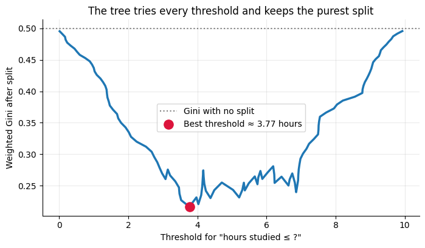
Our hand calculation and scikit-learn agree. Then the tree simply repeats the same search inside each child group, splitting again and again:
1. Start with all training examples at the root
2. Try every feature and every threshold; keep the split with the lowest weighted impurity
3. Send the examples left or right according to that question
4. Repeat steps 2–3 on each child until a stopping rule is hit
(max_depth reached, too few examples to split, or the group is already pure)
5. Each leaf predicts the majority class of its training examples
This is called greedy splitting: the tree always grabs the best split right now, without planning ahead. It’s fast, but it means the tree isn’t guaranteed to find the best possible tree overall.
Gini vs. entropy: scikit-learn can also measure impurity with entropy, \(-\sum_k p_k \log_2 p_k\), the same quantity behind log loss. Set
criterion='entropy'to use it. In practice the two almost always pick very similar splits.
5.5.6.3. 4.3 Growing and Reading a Full Tree#
Now a harder problem. In this course, students pass if they study enough and sleep enough, or if they study a huge amount. That rule involves an interaction between features, which a single straight line can’t express.
# ── Helper: create data with an interaction between features ────────────────
def making_data_for_decision_tree():
"""
Returns 400 students with two features and a pass (1) / fail (0) label:
- hours studied per day (0 to 10)
- hours slept per night (4 to 10)
Hidden rule: PASS if (studied > 4 AND slept > 6) OR studied > 8.
10% of labels are flipped at random to act as noise (real life is messy!).
"""
rng = np.random.RandomState(0)
n = 400
studied = rng.uniform(0, 10, n)
slept = rng.uniform(4, 10, n)
passed = (((studied > 4) & (slept > 6)) | (studied > 8)).astype(int)
flip = rng.rand(n) < 0.10
passed[flip] = 1 - passed[flip]
return np.column_stack([studied, slept]), passed
X_tree, y_tree = making_data_for_decision_tree()
tree_features = ['hours_studied', 'hours_slept']
# Split into train / validation / test (60 / 20 / 20)
Xt_train, Xt_temp, yt_train, yt_temp = train_test_split(X_tree, y_tree, test_size=0.4, random_state=42, stratify=y_tree)
Xt_val, Xt_test, yt_val, yt_test = train_test_split(Xt_temp, yt_temp, test_size=0.5, random_state=42, stratify=yt_temp)
tree3 = DecisionTreeClassifier(max_depth=3, random_state=42).fit(Xt_train, yt_train)
plt.figure(figsize=(16, 6.5))
plot_tree(tree3, feature_names=tree_features, class_names=['fail', 'pass'],
filled=True, rounded=True, impurity=True, fontsize=9)
plt.title('A depth-3 decision tree (orange = mostly fail, blue = mostly pass; darker = purer)')
plt.show()
print("The same tree as text rules:\n")
print(export_text(tree3, feature_names=tree_features))
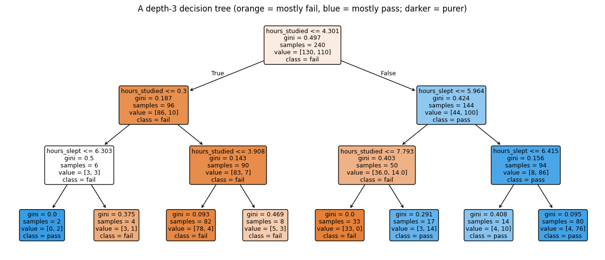
The same tree as text rules:
|--- hours_studied <= 4.30
| |--- hours_studied <= 0.30
| | |--- hours_slept <= 6.30
| | | |--- class: 1
| | |--- hours_slept > 6.30
| | | |--- class: 0
| |--- hours_studied > 0.30
| | |--- hours_studied <= 3.91
| | | |--- class: 0
| | |--- hours_studied > 3.91
| | | |--- class: 0
|--- hours_studied > 4.30
| |--- hours_slept <= 5.96
| | |--- hours_studied <= 7.79
| | | |--- class: 0
| | |--- hours_studied > 7.79
| | | |--- class: 1
| |--- hours_slept > 5.96
| | |--- hours_slept <= 6.42
| | | |--- class: 1
| | |--- hours_slept > 6.42
| | | |--- class: 1
How to read each box: the first line is the question (go left if true, right if false); gini is that node’s impurity;
samples is how many training students reached it; value is the count of [fail, pass]; and class is the majority vote, which becomes
the prediction if this is a leaf.
The tree discovered thresholds close to the hidden rule (around 4 and 8 hours of studying, and 6 hours of sleep) all on its own, just by searching for pure splits. Some of its later splits are less sensible, though: those are reacting to the noisy labels. That’s the first hint of the main weakness of trees.
5.5.6.4. 4.4 Trees Carve the Space into Rectangles#
Each question splits on one feature at a time, so every split is a vertical or horizontal line. Stack several and the tree divides the feature space into rectangles, each with one prediction. Compare that to logistic regression’s single straight line on the same data:
# ── Logistic regression vs. decision tree on data with an interaction ───────
logit_tree_data = LogisticRegression().fit(Xt_train, yt_train)
fig, axes = plt.subplots(1, 2, figsize=(14, 5))
plot_decision_boundary(axes[0], logit_tree_data, Xt_train, yt_train,
f'Logistic regression: one straight line\nvalidation accuracy = {logit_tree_data.score(Xt_val, yt_val):.1%}',
ylabel='Hours slept')
plot_decision_boundary(axes[1], tree3, Xt_train, yt_train,
f'Decision tree (depth 3): axis-aligned rectangles\nvalidation accuracy = {tree3.score(Xt_val, yt_val):.1%}',
ylabel='Hours slept')
axes[0].legend(loc='lower right')
plt.tight_layout(); plt.show()
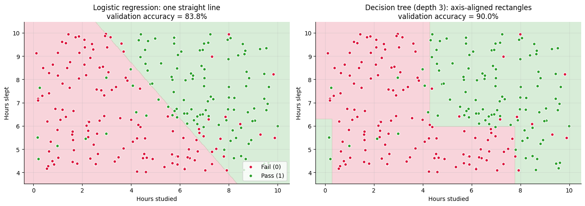
The real pattern is shaped like a staircase, and the tree’s rectangles match it naturally. Logistic regression can only draw one diagonal line through it, so it gets more students wrong. Neither model is “better” in general — on the earlier 2-feature dataset, where the true boundary really was a straight diagonal line, the tree would have had to approximate that line with a jagged staircase of tiny rectangles.
5.5.6.5. 4.5 Depth, Overfitting, and How to Stop It#
Left unchecked, a tree keeps splitting until every leaf is perfectly pure, which means it memorizes the training data, noise and all. This is the classic high-variance model from the bias–variance discussion:
Shallow tree (small
max_depth): too few questions → underfits (high bias).Very deep tree: a question for every quirk → overfits (high variance).
Let’s sweep max_depth, choose the best depth with the validation set, and check the final choice once on the test set.
# ── Training vs. validation accuracy as the tree grows deeper ───────────────
depths = range(1, 16)
train_acc, val_acc = [], []
for d in depths:
t = DecisionTreeClassifier(max_depth=d, random_state=42).fit(Xt_train, yt_train)
train_acc.append(t.score(Xt_train, yt_train))
val_acc.append(t.score(Xt_val, yt_val))
best_depth = list(depths)[int(np.argmax(val_acc))]
final_tree = DecisionTreeClassifier(max_depth=best_depth, random_state=42).fit(Xt_train, yt_train)
full_tree = DecisionTreeClassifier(random_state=42).fit(Xt_train, yt_train) # no depth limit at all
plt.figure(figsize=(8.5, 4.6))
plt.plot(list(depths), train_acc, 'o-', lw=2.5, label='Training accuracy')
plt.plot(list(depths), val_acc, 's-', lw=2.5, color='crimson', label='Validation accuracy')
plt.axhline(0.90, color='gray', ls=':', label='≈ Best possible (10% of labels are noise)')
plt.axvline(best_depth, color='green', ls='--', alpha=0.7, label=f'Best validation accuracy: depth {best_depth}')
plt.xlabel('max_depth'); plt.ylabel('Accuracy'); plt.ylim(0.6, 1.02)
plt.title('Deeper trees memorize the training data while validation accuracy falls'); plt.legend(fontsize=9)
plt.show()
print(f"Unlimited depth: grew to depth {full_tree.get_depth()} with {full_tree.get_n_leaves()} leaves")
print(f" train accuracy {full_tree.score(Xt_train, yt_train):.1%}, validation accuracy {full_tree.score(Xt_val, yt_val):.1%} <- memorized")
print(f"Depth {best_depth} (chosen): {final_tree.get_n_leaves()} leaves, train {final_tree.score(Xt_train, yt_train):.1%}, validation {final_tree.score(Xt_val, yt_val):.1%}")
print(f"Final test accuracy of the depth-{best_depth} tree: {final_tree.score(Xt_test, yt_test):.1%} <- evaluated once, at the very end")
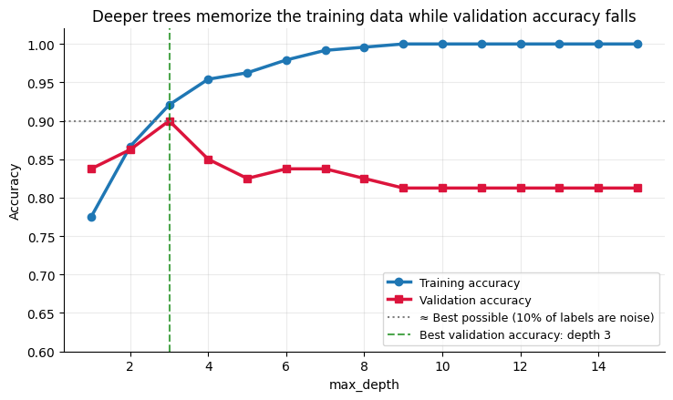
Unlimited depth: grew to depth 9 with 34 leaves
train accuracy 100.0%, validation accuracy 81.2% <- memorized
Depth 3 (chosen): 8 leaves, train 92.1%, validation 90.0%
Final test accuracy of the depth-3 tree: 90.0% <- evaluated once, at the very end
# ── See it: underfit, good fit, and overfit trees ───────────────────────────
fig, axes = plt.subplots(1, 3, figsize=(17, 4.8))
for ax, model, title in zip(axes,
[DecisionTreeClassifier(max_depth=1, random_state=42).fit(Xt_train, yt_train), final_tree, full_tree],
['max_depth = 1: UNDERFIT\n(one question is not enough)',
f'max_depth = {best_depth}: GOOD FIT\n(captures the staircase)',
f'No depth limit: OVERFIT\n(tiny boxes around noisy points)']):
plot_decision_boundary(ax, model, Xt_train, yt_train, title, ylabel='Hours slept')
plt.tight_layout(); plt.show()
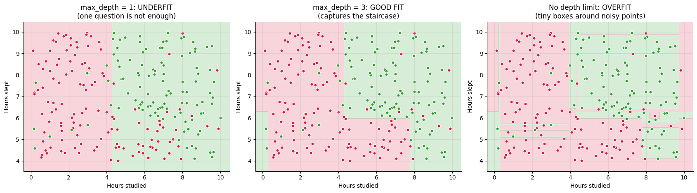
The unlimited tree on the right draws tiny boxes around individual noisy students. It scores perfectly on training data, but those boxes are useless (or harmful) for new students.
Ways to stop a tree from overfitting (all are hyperparameters you tune on validation data):
max_depth— limit how many questions in a row it can askmin_samples_leaf— require every leaf to contain at least this many training examplesmin_samples_split— don’t split a node with fewer than this many examplesOr average many trees together: that’s a Random Forest, covered in a later chapter.
5.5.6.6. 4.6 Regression Trees#
Trees can predict numbers too. The only changes:
Each leaf predicts the average target value of the training examples that land in it.
Splits are chosen to minimize MSE inside the child groups, instead of Gini impurity.
Since each leaf outputs a single number, a regression tree’s prediction is a step function. Let’s try it on the curved sleep data from Part 2.
# ── Regression trees of different depths on the curved sleep data ──────────
grid = np.linspace(3, 11, 500).reshape(-1, 1)
fig, axes = plt.subplots(1, 3, figsize=(16, 4.4), sharey=True)
for ax, d in zip(axes, [1, 3, 8]):
reg_tree = DecisionTreeRegressor(max_depth=d, random_state=42).fit(X_sleep, y_sleep)
ax.scatter(X_sleep, y_sleep, alpha=0.4)
ax.plot(grid, reg_tree.predict(grid), color='crimson', lw=2.5)
ax.set_title(f'max_depth = {d} ({reg_tree.get_n_leaves()} leaves)\ntraining R² = {r2_score(y_sleep, reg_tree.predict(X_sleep)):.2f}')
ax.set_xlabel('Hours slept')
axes[0].set_ylabel('Exam score')
plt.tight_layout(); plt.show()
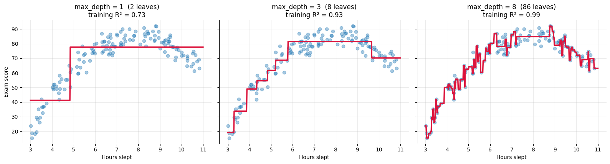
Depth 1: two steps. Too crude to follow the curve.
Depth 3: eight steps that trace the upside-down U nicely, with no feature engineering. Compare that to linear regression, which needed us to add \(x^2\) by hand.
Depth 8: jagged steps chasing individual points. A higher training \(R^2\), but it’s fitting noise.
One limitation to remember: A tree can only predict values it saw in training, the averages in its leaves. It cannot extrapolate. Ask it about 14 hours of sleep and it will give the same answer as for 11 hours, while a linear model would continue its trend.
5.5.6.6.1. Pros & Cons — Decision Trees#
Strengths |
Weaknesses |
|---|---|
Easy to explain: it’s a flowchart anyone can follow |
Overfits easily if not limited |
Captures non-linear patterns and interactions automatically |
Unstable: small changes in the data can produce a very different tree |
No feature scaling needed (splits only compare values to thresholds) |
Boundaries are always axis-aligned “staircases” |
Handles both regression and classification |
Can’t extrapolate beyond the training range |
Gives a built-in feature importance score |
A single tree is usually less accurate than an ensemble of trees |
Best used when: you need a model you can draw and explain, the pattern involves thresholds or interactions, or as the building block for Random Forests and boosting.
5.5.6.6.2. Key Parameters — Decision Tree#
Parameter |
What it does |
Default |
Effect of changing it |
|---|---|---|---|
|
Maximum number of questions on any path |
|
Higher = more complex, risk of overfitting; lower = simpler, may underfit. The most important one to tune. |
|
Minimum training examples required in each leaf |
|
Higher = smoother, more stable predictions |
|
Minimum examples a node needs before it may split |
|
Higher = fewer splits, simpler tree |
|
How split quality is measured |
|
|
|
How many features to consider at each split |
|
Smaller values add randomness; mostly used inside Random Forests |
|
Fixes randomness so you get the same tree each run |
|
Any integer works — just keep it consistent |
Rule of thumb: Never ship an unlimited tree. Start with
max_depthbetween 3 and 6, then tune it on validation data.
5.5.6.6.3. ✏️ Quick Check#
A node contains 6 “pass” and 2 “fail” students. What is its Gini impurity?
Why don’t decision trees need feature scaling, while logistic regression does?
An unlimited-depth tree gets 100% training accuracy and 71% validation accuracy. What’s happening, and name two parameters that could fix it.
Click for answers
\(p_{\text{pass}} = 0.75\), \(p_{\text{fail}} = 0.25\), so Gini \(= 1 - (0.75^2 + 0.25^2) = 1 - 0.625 =\) 0.375.
A tree only asks “is this feature ≤ some threshold?” Rescaling a feature moves the threshold but produces the exact same split. Logistic regression multiplies features by weights, and its regularization penalty treats all weights equally, so feature scale matters.
Overfitting (high variance): the tree memorized the training data. Limit it with
max_depth,min_samples_leaf, ormin_samples_split(or switch to a Random Forest).
5.5.7. Part 5: Putting It Together#
5.5.7.1. 5.1 Regression Showdown: Linear Regression vs. Regression Tree#
There’s no model that wins on every problem. Which one does better depends on the shape of the real pattern. Let’s compare them on two of our datasets:
The multi-feature student data (Part 2.3), where the true pattern is linear.
The curved sleep data (Part 2.5), where the true pattern is an upside-down U.
# ── Same models, two different datasets ─────────────────────────────────────
Xs_train, Xs_test, ys_train, ys_test = train_test_split(X_sleep, y_sleep, test_size=0.3, random_state=42)
datasets = {'Linear pattern (student features)': (Xm_train, Xm_test, ym_train, ym_test),
'Curved pattern (hours slept)': (Xs_train, Xs_test, ys_train, ys_test)}
models = {'Linear regression': lambda: LinearRegression(),
'Regression tree (max_depth = 4)': lambda: DecisionTreeRegressor(max_depth=4, random_state=42)}
rows = []
for data_name, (Xa, Xb, ya, yb) in datasets.items():
for model_name, make_model in models.items():
m = make_model().fit(Xa, ya)
rows.append({'dataset': data_name, 'model': model_name,
'test RMSE': np.sqrt(mean_squared_error(yb, m.predict(Xb))),
'test R²': r2_score(yb, m.predict(Xb))})
results = pd.DataFrame(rows).pivot(index='model', columns='dataset', values='test RMSE').round(2)
print("Test RMSE (lower is better):\n")
print(results.to_string())
Test RMSE (lower is better):
dataset Curved pattern (hours slept) Linear pattern (student features)
model
Linear regression 15.28 5.26
Regression tree (max_depth = 4) 4.92 7.54
On the linear data, linear regression wins. The tree has to approximate a smooth plane with a staircase of leaf averages, which adds error.
On the curved data, the tree wins easily, because a plain straight line can’t bend (unless we add \(x^2\), as in Part 2.5).
Lesson: look at your data and your residuals, and always compare a few models on validation data before choosing one.
5.5.7.2. 5.2 Classification Showdown on Real Data: Breast Cancer Diagnosis#
Let’s finish with a real dataset that ships with scikit-learn: measurements of 569 breast tumor biopsies, described by 30 features computed from microscope images (radius, texture, smoothness, and so on). The goal is to predict whether a tumor is malignant (cancerous) or benign.
Here a false negative (calling a malignant tumor benign) is far worse than a false positive, so we care a lot about recall for the malignant class.
# ── Load the data ───────────────────────────────────────────────────────────
cancer = load_breast_cancer(as_frame=True)
X_bc = cancer.data
y_bc = 1 - cancer.target # sklearn codes malignant as 0; flip it so 1 = malignant (the class we want to catch)
print(f"{X_bc.shape[0]} tumors, {X_bc.shape[1]} features")
print(f"Malignant: {y_bc.sum()} ({y_bc.mean():.0%}), Benign: {(1 - y_bc).sum()} ({1 - y_bc.mean():.0%})\n")
Xb_train, Xb_test, yb_train, yb_test = train_test_split(X_bc, y_bc, test_size=0.25, random_state=42, stratify=y_bc)
# Logistic regression needs scaled features; the tree does not
bc_models = {
'Logistic regression': make_pipeline(StandardScaler(), LogisticRegression(max_iter=1000)),
'Decision tree (depth 4)': DecisionTreeClassifier(max_depth=4, random_state=42),
}
fig, axes = plt.subplots(1, 2, figsize=(11, 4.2))
print(f"{'Model':<25} {'Accuracy':>9} {'Precision':>10} {'Recall':>8}")
print("-" * 55)
for ax, (name, model) in zip(axes, bc_models.items()):
model.fit(Xb_train, yb_train)
pred = model.predict(Xb_test)
print(f"{name:<25} {accuracy_score(yb_test, pred):>9.1%} {precision_score(yb_test, pred):>10.1%} {recall_score(yb_test, pred):>8.1%}")
ConfusionMatrixDisplay(confusion_matrix(yb_test, pred), display_labels=['Benign', 'Malignant']).plot(ax=ax, cmap='Blues', colorbar=False)
ax.set_title(name); ax.grid(False)
plt.tight_layout(); plt.show()
569 tumors, 30 features
Malignant: 212 (37%), Benign: 357 (63%)
Model Accuracy Precision Recall
-------------------------------------------------------
Logistic regression 96.5% 98.0% 92.5%
Decision tree (depth 4) 89.5% 97.5% 73.6%
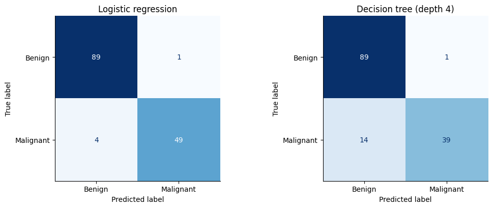
Logistic regression comes out ahead here. Many of these tumor measurements change smoothly and together, which suits a weighted sum, while a single depth-4 tree can only use a handful of thresholds. (In a later chapter, a Random Forest of hundreds of trees closes this gap.)
5.5.7.2.1. What did each model learn?#
Both models can tell us which features they relied on, but in different ways:
Logistic regression: the standardized coefficients. Sign shows direction (positive = pushes toward malignant); size shows strength.
Decision tree: feature importance, the total impurity reduction a feature’s splits produced, normalized to add up to 1. It shows how much a feature was used, not in which direction.
# ── Compare what each model relied on ───────────────────────────────────────
log_coefs = pd.Series(bc_models['Logistic regression'][-1].coef_[0], index=X_bc.columns)
tree_imp = pd.Series(bc_models['Decision tree (depth 4)'].feature_importances_, index=X_bc.columns)
top_log = log_coefs.reindex(log_coefs.abs().sort_values().index)[-8:]
top_tree = tree_imp.sort_values()[-8:]
fig, axes = plt.subplots(1, 2, figsize=(14, 4.6))
top_log.plot.barh(ax=axes[0], color=['crimson' if c > 0 else 'tab:blue' for c in top_log])
axes[0].axvline(0, color='black', lw=0.8)
axes[0].set_title('Logistic regression: top 8 standardized coefficients\n(red = pushes toward malignant)')
top_tree.plot.barh(ax=axes[1], color='tab:green')
axes[1].set_title('Decision tree: top 8 feature importances\n(share of total impurity reduction)')
plt.tight_layout(); plt.show()
print(f"The tree used only {(tree_imp > 0).sum()} of the 30 features; logistic regression gives every feature a nonzero weight.")
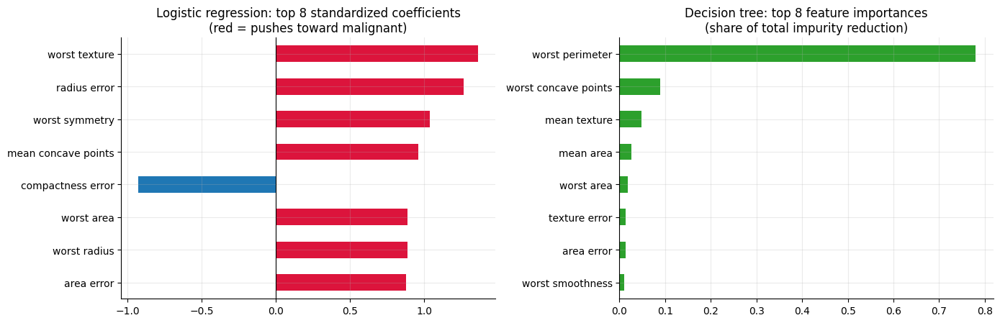
The tree used only 8 of the 30 features; logistic regression gives every feature a nonzero weight.
The two models tell somewhat different stories. The tree leans almost entirely on a single size measurement (worst perimeter), while logistic
regression spreads its weight across texture, size, concavity, and symmetry features. That isn’t a contradiction. Radius, perimeter, and area all
measure tumor size and are strongly correlated, so a tree can pick any one of them and ignore the rest, while logistic regression can split the
credit among them in ways that are hard to interpret. Treat coefficients and importance scores as clues about what a model used, not proof of
what causes the outcome.
5.5.7.2.2. Quick Guide: Which Model Should I Use?#
Situation |
Good first choice |
|---|---|
Predict a number, relationship looks roughly linear |
Linear Regression |
Predict a category, need probabilities or an explainable model |
Logistic Regression |
Pattern involves thresholds, interactions, or curves; want a flowchart you can show people |
Decision Tree |
Need the best possible accuracy |
Try a tree ensemble (Random Forest, XGBoost) — covered later |
Not sure? |
Fit a simple linear/logistic baseline first, then see if a tree beats it on validation data |
5.5.8. Chapter Summary#
Well done making it through the chapter! Here is a full recap:
5.5.8.1. Linear Regression#
Predicts a number as a weighted sum: \(\hat{y} = w_1x_1 + \dots + w_px_p + b\).
Trained by least squares (minimizing MSE), solved exactly by the normal equation or approximately by gradient descent.
Coefficient \(w_j\) = change in prediction per unit of \(x_j\), holding the other features fixed. Standardize features to compare coefficients.
Evaluate with MAE, RMSE, and \(R^2\) (fraction of variation explained) on test data, and check the residuals for patterns.
Curved patterns need engineered features like \(x^2\); “linear” means linear in the parameters.
5.5.8.2. Logistic Regression#
A classification model: weighted sum \(z\) → sigmoid \(\sigma(z) = \frac{1}{1+e^{-z}}\) → probability → threshold → class.
Trained by minimizing log loss with an iterative optimizer; the gradient has the same form as linear regression’s.
\(e^{w}\) is the odds ratio: how much one extra unit of \(x\) multiplies the odds of class 1.
Its decision boundary is a straight line (linear classifier).
Lower threshold → higher recall, lower precision; raise it for the opposite. sklearn regularizes by default (
C=1.0).
5.5.8.3. Decision Trees#
Predict by asking a sequence of yes/no questions; each leaf holds a prediction (majority class, or average value for regression).
Splits are chosen greedily to minimize Gini impurity \(1 - \sum_k p_k^2\) (or MSE for regression).
Boundaries are axis-aligned rectangles; trees capture interactions and non-linear patterns with no scaling or feature engineering.
Unlimited trees overfit: limit
max_depth/min_samples_leafand choose them on validation data.Regression trees produce step functions and cannot extrapolate.
Linear Regression |
Logistic Regression |
Decision Tree |
|
|---|---|---|---|
Task |
Regression |
Classification |
Both |
Shape of the fit |
Line / plane |
Linear boundary + S-curve probability |
Rectangles / steps |
Needs scaling? |
Only to compare coefficients |
Yes (recommended) |
No |
Main risk |
Underfitting non-linear patterns |
Underfitting non-linear boundaries |
Overfitting |
Interpretation |
Coefficients |
Odds ratios |
The flowchart + feature importance |
5.5.8.4. Quick-Reference Code#
from sklearn.linear_model import LinearRegression, LogisticRegression
from sklearn.tree import DecisionTreeClassifier, DecisionTreeRegressor, plot_tree
from sklearn.pipeline import make_pipeline
from sklearn.preprocessing import StandardScaler
from sklearn.metrics import mean_squared_error, r2_score, accuracy_score, precision_score, recall_score
# --- Linear regression ---
lin = LinearRegression().fit(X_train, y_train)
lin.coef_, lin.intercept_ # learned weights and intercept
r2_score(y_test, lin.predict(X_test))
# --- Logistic regression (scale first!) ---
logit = make_pipeline(StandardScaler(), LogisticRegression(C=1.0)).fit(X_train, y_train)
probs = logit.predict_proba(X_test)[:, 1] # probability of class 1
preds = (probs >= 0.5).astype(int) # choose your own threshold
recall_score(y_test, preds)
# --- Decision tree ---
tree = DecisionTreeClassifier(max_depth=4, random_state=42).fit(X_train, y_train)
plot_tree(tree, feature_names=feature_names, filled=True)
tree.feature_importances_
# --- Choose a hyperparameter on validation data, then test ONCE ---
best = max(range(1, 15), key=lambda d: DecisionTreeClassifier(max_depth=d).fit(X_train, y_train).score(X_val, y_val))
5.5.8.5. ✏️ Check Your Understanding#
You need to predict next month’s electricity bill (in dollars) for each household. Which model(s) from this chapter could you use?
Your logistic regression’s predicted probabilities are all between 0 and 1, but your colleague’s “classifier” (a linear regression on 0/1 labels) predicts 1.4 for some cases. What’s wrong with the colleague’s approach?
Linear regression gives a coefficient of
−0.02ondistance_to_campus_in_metersand+3.1onhas_parking. Can you conclude parking matters more than distance? Why or why not?A decision tree’s very first split is
income <= 52,000. What does that tell you about how the tree chose it?Your data has a clear threshold effect: customers who wait more than 10 minutes almost always leave a bad review. Which model would capture this most naturally?
Logistic regression and a decision tree both get 92% test accuracy on your problem. Name one reason you might pick each one.
Click for answers
Linear regression or a regression tree (the target is a number). Logistic regression is for categories.
Linear regression isn’t bounded, so it can output impossible “probabilities” above 1 or below 0, and it’s pulled around by points far from the boundary. Logistic regression’s sigmoid keeps outputs between 0 and 1 and is trained with log loss, which suits classification.
No. The coefficients are in different units. Distance is measured in meters, so −0.02 per meter is −20 per kilometer. Standardize the features first, then compare.
Of every feature and every threshold it tried, splitting on income at 52,000 produced the largest drop in impurity: it separated the classes more cleanly than any other single question.
A decision tree: a split like
wait_minutes <= 10captures a threshold effect directly, while a linear model would spread the effect smoothly across all wait times.Logistic regression: well-calibrated probabilities, stable coefficients, odds-ratio interpretation, extrapolates smoothly. Decision tree: a flowchart non-experts can follow, no scaling needed, captures interactions automatically.
The Big Takeaway: Linear regression, logistic regression, and decision trees all follow the same recipe: a model that turns features into a prediction, a loss that measures how wrong it is, and a training procedure that lowers that loss. Linear models draw straight lines and are easy to interpret; trees ask yes/no questions and capture non-linear patterns but overfit if left unchecked. Compare them on validation data, and judge the final choice on unseen test data.